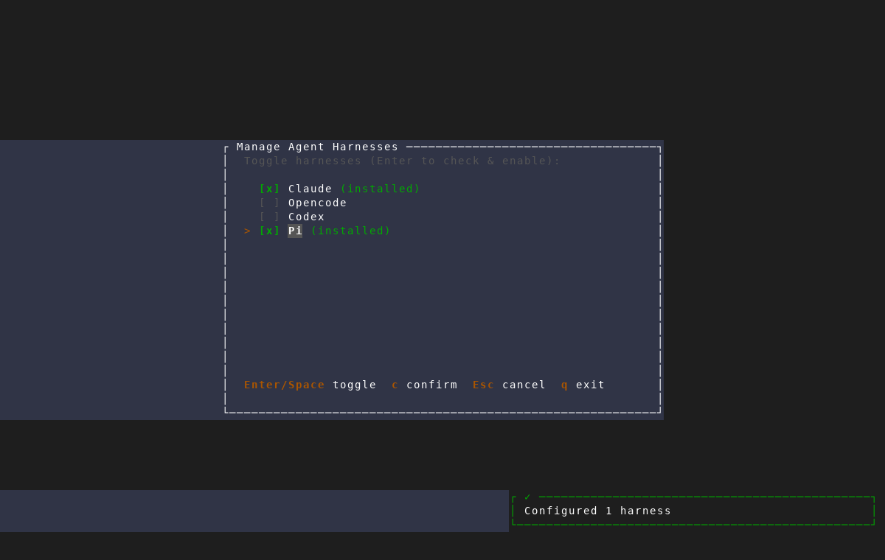
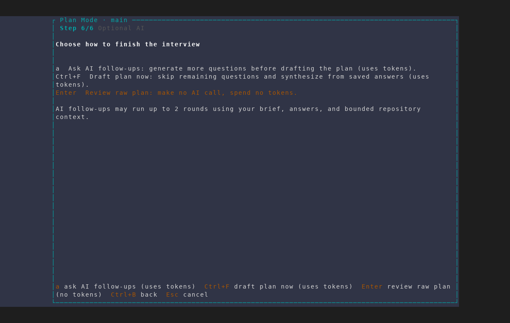
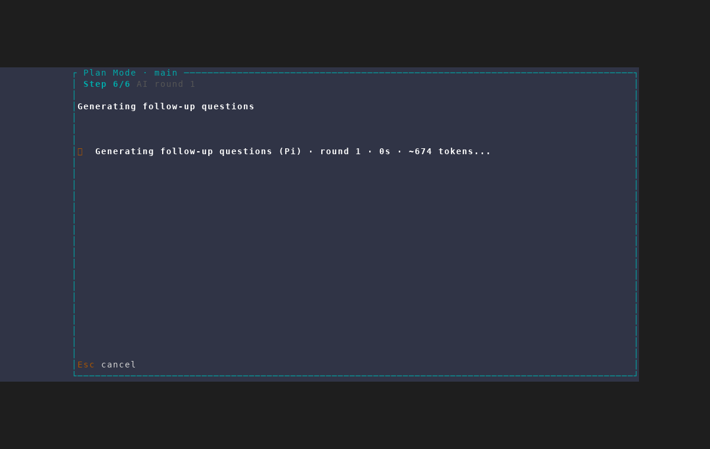

Pi-powered plan interviews
plan-mode branch · isolated AMF scratch instance · deterministic Pi fixture · no provider tokens used



plan-mode branch · isolated AMF scratch instance · deterministic Pi fixture · no provider tokens used


